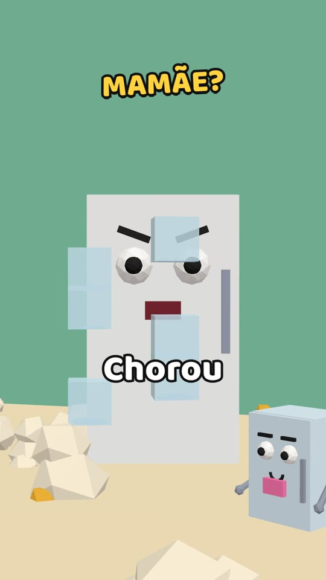
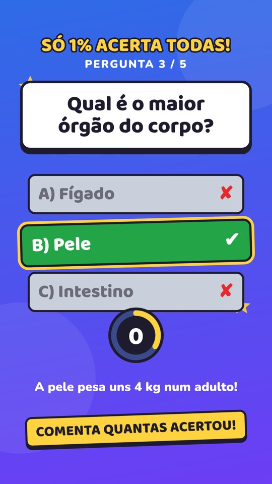
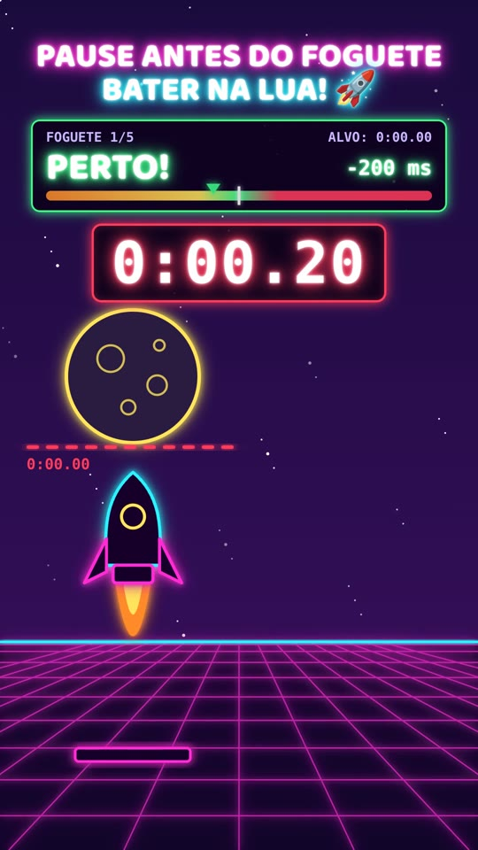
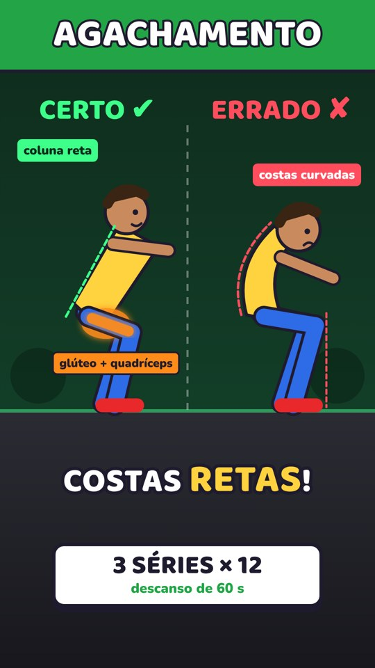
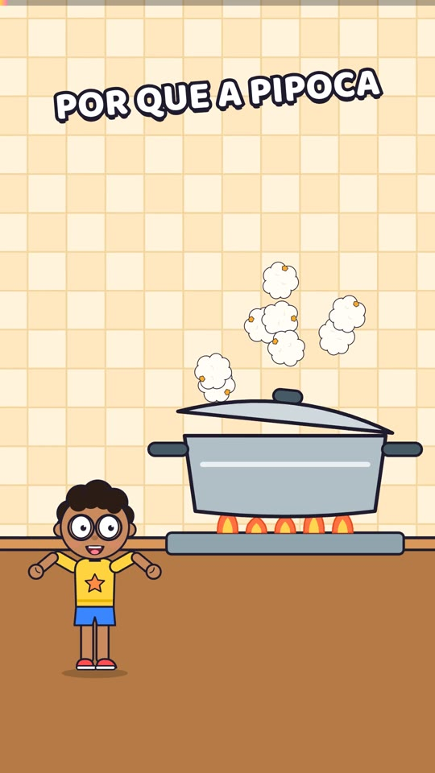
Este é um curso prático. Ao final, você vai ter um estúdio de animação (no celular ou no computador) que transforma um pedido em português, como "faz um vídeo explicando por que o céu é azul", em um vídeo MP4 vertical: animado, narrado, com legenda sincronizada, música e efeitos, pronto para postar.
Você não precisa saber desenhar, programar ou editar. Quem escreve o roteiro, o código da animação e os scripts é a IA (Claude). O seu papel é o de diretor: escolher a ideia, aprovar o rascunho e dizer o que mudar.
Tudo funciona só pelo celular. O computador é opcional.
O primeiro vídeo, aprendendo. Depois, um formato montado sai em menos de 1 hora.
Só a assinatura do Claude. Voz premium é opcional; há formatos de custo zero.
Você não precisa de computador. Todo o método desta apostila funciona direto do app do Claude no celular: o Claude trabalha num computador na nuvem, instala tudo, anima, narra e renderiza, e o vídeo pronto chega na conversa para você baixar e postar.
O autor deste método produz os vídeos 100% pelo celular. Os caminhos "pelo celular" e "pelo computador" estão lado a lado no Módulo 2: escolha o seu.
[assim].Leia um capítulo, faça o vídeo e só então avance. Na primeira vez o processo leva algumas horas; a partir do terceiro vídeo, um formato já montado costuma sair em menos de uma hora, a maior parte esperando a renderização.
A IA acelera muito, mas não substitui o seu olhar. Os melhores resultados vêm de quem confere cada rascunho (enquadramento, fatos, piada, ritmo) e pede ajustes. Este curso ensina justamente esse ciclo.
Entenda como as peças se encaixam antes de começar.
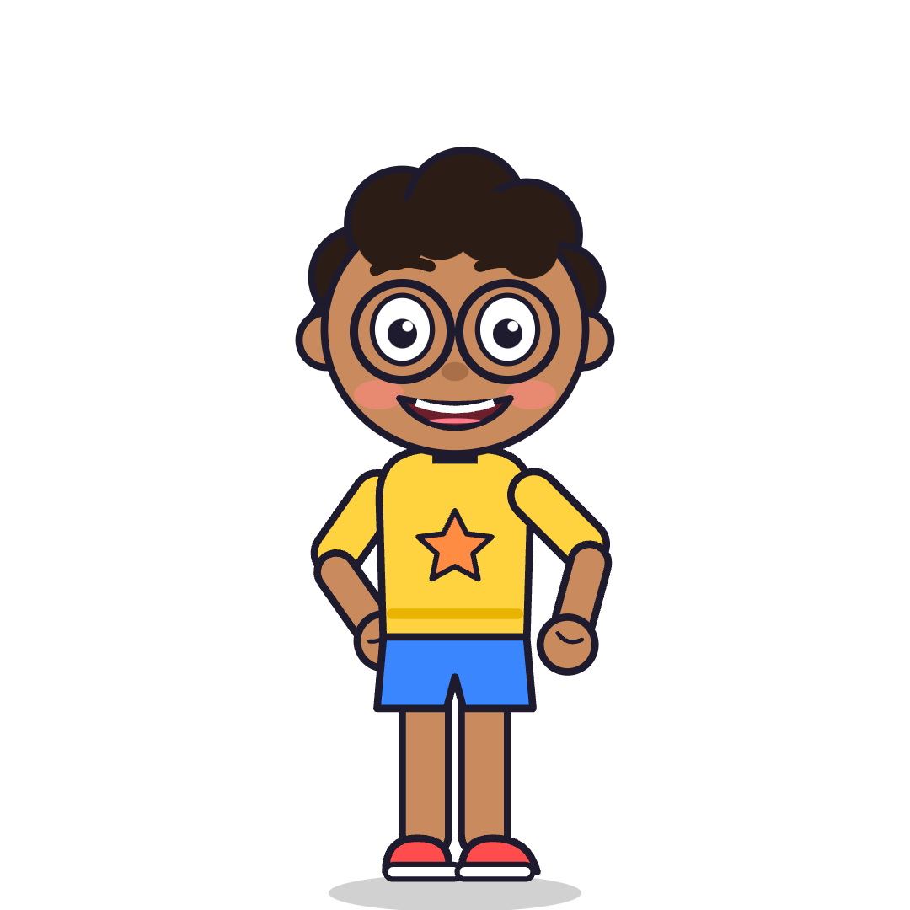
Um vídeo animado tradicional é feito em programas de animação, quadro a quadro. Aqui fazemos diferente: o vídeo é escrito como código. Cada cena é uma pequena "receita" que diz onde está cada personagem, cor, texto e movimento em cada instante. Como é código, a IA consegue escrever, e um programa chamado Remotion transforma essa receita em vídeo.
O grande truque é a sincronia: quando a narração é gerada, guardamos o instante exato de cada palavra. As cenas usam esses instantes, então quando o narrador diz "BOOM!" a explosão acontece exatamente ali, e a legenda acende palavra por palavra.
| Ferramenta | Para que serve | Custo |
|---|---|---|
| Claude Code | A IA que trabalha dentro do seu computador: cria pastas, escreve código, roda comandos, olha as imagens geradas e corrige o que estiver errado. | Assinatura do Claude |
| Remotion | Biblioteca que transforma código (React) em vídeo MP4. É o "motor de animação". | Grátis para uso individual* |
| Node.js | Programa que roda o Remotion e o Claude Code. | Grátis |
| Python | Roda os scripts de voz, legenda e conferência de qualidade. | Grátis |
| FFmpeg | "Canivete suíço" de áudio e vídeo: mede volume, junta faixas, extrai quadros. | Grátis |
| Git (+ GitHub) | Guarda o histórico de versões do seu estúdio. Se algo quebrar, você volta atrás. | Grátis |
| Voz grátis (Kokoro) | Narração neural gratuita, roda no seu computador. Ótima para rascunhos. | Grátis |
| ElevenLabs (opcional) | Vozes profissionais e expressivas para a versão final. | Por caractere / plano mensal |
* O Remotion é gratuito para pessoas físicas, organizações sem fins lucrativos e empresas com até 3 funcionários; empresas maiores precisam de uma licença paga. Veja "Licenças e avisos" no final.
Preços mudam: confira sempre nos sites oficiais antes de assinar.
Regra de ouro para não desperdiçar dinheiro: todo vídeo nasce com voz grátis. Você assiste o rascunho, pede todas as mudanças de texto e imagem e só então gera a voz paga, uma única vez. Ajustes depois disso (velocidade de um trecho, volume, pausas) são feitos localmente, sem pagar de novo. Vamos configurar o estúdio para seguir essa regra sozinho.
Nada é instalado no celular: o "computador" é virtual, na nuvem.
Bom para quem quer ver os arquivos e usar o Remotion Studio na tela grande.
A partir do Módulo 3, tudo é igual: você conversa com o Claude e ele faz o trabalho. A única diferença é onde o trabalho acontece (no seu computador ou num computador na nuvem). Dá até para misturar: começar no celular e abrir o mesmo projeto no computador depois.
Mesmo os vídeos em 3D deste curso rodam sem placa de vídeo dedicada (o Remotion consegue desenhar o 3D pelo processador). Só fica mais lento: um vídeo 3D de 60 s pode levar de 10 a 30 minutos para renderizar, no computador ou na nuvem.
Uma vez só: pelo celular ou pelo computador.
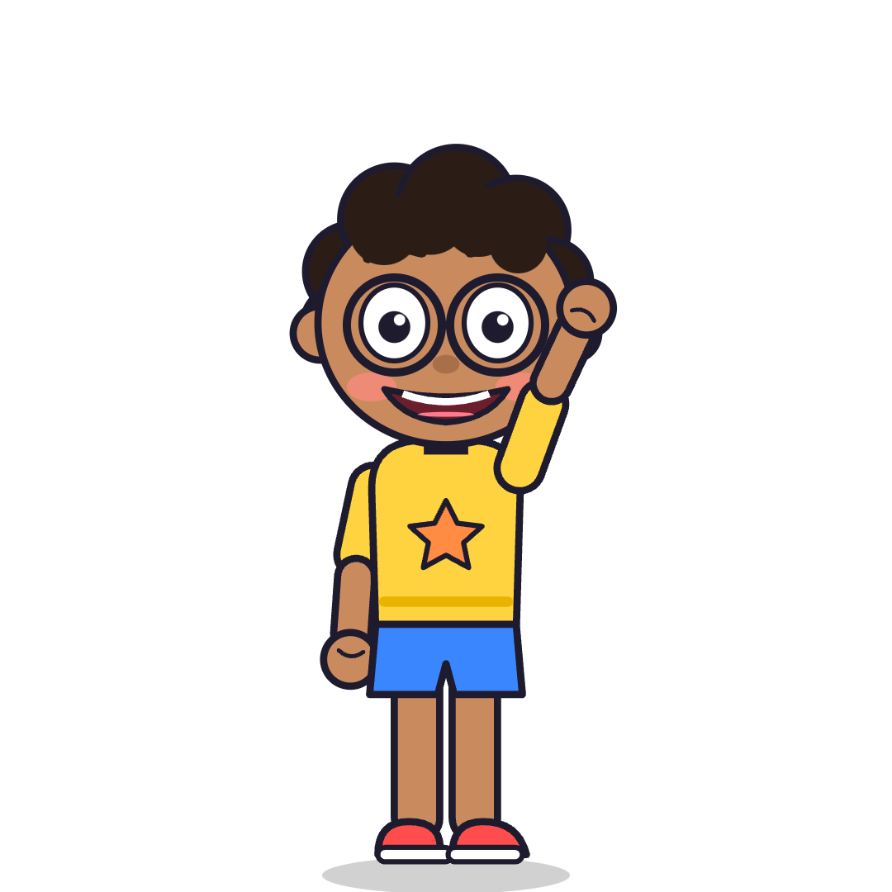
É o caminho mais simples: não há nada para instalar. O Claude Code roda num computador virtual na nuvem ligado a um repositório seu no GitHub, e você comanda tudo pelo app do Claude.
claude.ai.github.com). Toque em New repository, dê um nome (ex.: meu-estudio), marque Private e Add a README (para ele não nascer vazio) e crie.claude.ai/code). Na primeira vez ele pede para conectar o GitHub: autorize o acesso ao repositório que você criou.Nunca cole a chave na conversa. Ela é cadastrada nas configurações do ambiente (menu do ambiente → Editar), como segredo de rede para o endereço api.elevenlabs.io; em geral o próprio Claude abre um formulário seguro pedindo a chave quando precisar. Se o ambiente bloquear a internet para esse endereço, o Claude também pede a liberação, e você aprova na tela.
Siga os passos abaixo uma única vez.
nodejs.org e instale clicando em "Avançar".git-scm.com e instale com as opções padrão (ele também instala o "Git Bash").python.org. Na primeira tela, marque "Add Python to PATH".winget install ffmpeg.Instale o Homebrew (instruções em brew.sh) e depois rode no Terminal:
brew install node git python ffmpeg
sudo apt update && sudo apt install -y nodejs npm git python3 python3-pip ffmpeg
Feche e abra o terminal de novo, depois rode cada linha. Todas precisam responder com um número de versão:
node -v
git --version
python3 --version # no Windows: python --version
ffmpeg -version
Quase sempre é porque o terminal foi aberto antes da instalação. Feche todas as janelas do terminal e abra de novo. Se persistir, reinicie o computador.
O Claude Code é a IA "de mangas arregaçadas": em vez de só conversar, ela mexe nos arquivos do seu projeto. A forma de instalar pode mudar com o tempo, então confira a página oficial (docs.claude.com, seção Claude Code). No momento em que esta apostila foi escrita, os comandos eram:
# macOS / Linux curl -fsSL https://claude.ai/install.sh | bash # Windows (PowerShell) irm https://claude.ai/install.ps1 | iex # alternativa em qualquer sistema (precisa do Node.js) npm install -g @anthropic-ai/claude-code
Depois, rode claude no terminal. Na primeira vez ele abre o navegador para você fazer login com a sua conta do Claude.
O Claude Code também existe como extensão do VS Code e como aplicativo de computador. Funciona do mesmo jeito; use o que for mais confortável. Nesta apostila mostramos o terminal porque é igual em todos os sistemas.
Documentos/estudio.claude e aperte Enter.O Claude vai pedir permissão para rodar comandos. Leia o que ele quer fazer e aprove. Se algo estiver faltando, ele explica como instalar.
Por segurança, o Claude Code pergunta antes de rodar comandos ou mexer em arquivos. No começo, aprove um por um e leia o que está sendo feito: é a melhor forma de aprender. Depois você pode liberar os comandos que se repetem (ex.: renderizar).
Um único projeto que produz todos os formatos.
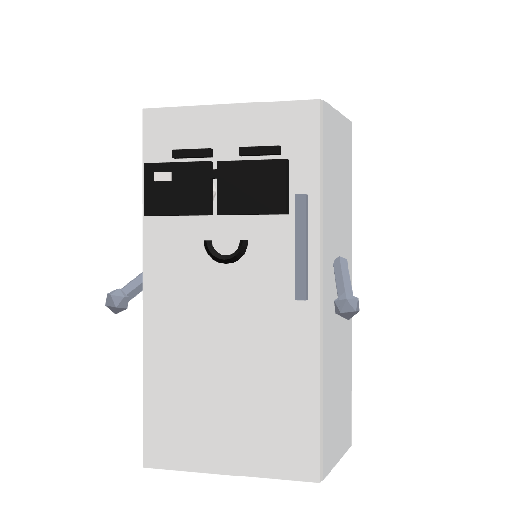
Abra o Claude Code dentro da pasta do estúdio e cole o prompt abaixo. Ele cria o projeto Remotion, instala o que for preciso e faz um vídeo de teste.
Quero montar um estúdio de vídeos animados verticais com Remotion nesta pasta.
1. Crie um projeto Remotion com TypeScript (formato 1080x1920, 30 fps).
2. Instale também @remotion/three (para cenas 3D) e fontes locais (Baloo 2 e Nunito via @fontsource), para não depender de internet ao renderizar.
3. Faça uma composição de teste de 5 segundos: fundo colorido, um círculo que entra quicando e o texto "ESTÚDIO PRONTO!".
4. Crie scripts no package.json: "studio" (abrir o Remotion Studio) e "render" (gerar out/teste.mp4).
5. Renderize o teste e me diga onde está o arquivo.
Abra o MP4 gerado. Se você viu o círculo quicando, o motor de animação está funcionando.
É o padrão de Reels, TikTok e Shorts: vertical 9:16, Full HD, 30 quadros por segundo. Tudo neste curso usa esse formato.
Com o tempo, o estúdio cresce. Uma organização clara faz o Claude acertar mais e errar menos. Esta é a estrutura recomendada (peça ao Claude para seguir):
estudio/ ├── CLAUDE.md ← manual do estúdio (regras gerais) ├── .claude/skills/ ← um "manual" por formato │ ├── explicativo/SKILL.md │ ├── quiz/SKILL.md │ └── ... ├── roteiros/ ← um JSON por vídeo (texto, cenas, voz) ├── src/ │ ├── Root.tsx ← lista de composições (formatos) │ ├── comum/ ← peças reaproveitáveis: legenda, câmera, efeitos │ ├── explicativo/ ← personagem, cenários e cenas do formato 1 │ ├── quiz/ ← formato 6 │ └── ... ├── scripts/ ← gerar voz, legenda, música e conferência (Python) ├── public/audio/ ← narração, música e efeitos gerados └── out/ ← vídeos prontos (MP4)
O CLAUDE.md é um arquivo de texto na raiz do projeto que o Claude lê toda vez que começa a trabalhar. É ali que você escreve as regras do seu estúdio, como faria com um funcionário novo. Sem ele, você teria que repetir as mesmas instruções em todo pedido.
Exemplo de um bom CLAUDE.md (adapte):
# Meu Estúdio de Vídeos
Responda sempre em português do Brasil.
## Formatos (cada um tem uma skill em .claude/skills/)
| Pedido | Skill | Composição |
|--------------------------|--------------|-------------|
| "vídeo explicativo" | explicativo | Explicativo |
| "quiz" | quiz | Quiz |
| "vídeo de treino" | fitness | Fitness |
## Regras de custo
- Voz paga (ElevenLabs) SÓ com a minha autorização explícita ("autorizo"),
sempre dizendo antes quantos caracteres serão cobrados.
- Rascunhos SEMPRE com a voz grátis.
- Ajustes depois da voz paga: só locais (velocidade, pausas, volume).
## Segurança
- Nunca peça, mostre ou grave chaves de API em arquivos versionados.
## Qualidade
- Sempre rode a conferência (npm run qa) e olhe os quadros antes de entregar.
- Fatos de vídeos educativos: confira em duas fontes e liste as fontes.
Você pode pedir: "Cria um CLAUDE.md para este estúdio com regras de idioma, custo e qualidade." Depois, sempre que corrigir o Claude em algo que vale para sempre, diga: "Anota isso no CLAUDE.md." O estúdio vai ficando mais inteligente a cada vídeo.
Uma skill é um manual específico de um formato, guardado em .claude/skills/<nome>/SKILL.md. Quando você pede "faz um quiz", o Claude encontra a skill do quiz e segue a receita dela: duração, estilo, ritmo, regras de humor e passo a passo.
Estrutura de um SKILL.md:
--- name: quiz description: Vídeos de QUIZ (pergunta, 3 alternativas, timer de 5 s, resposta). Use quando o usuário pedir "quiz", "pergunta e resposta" ou "teste seus conhecimentos". --- # Quiz ## Especificação - 9:16, 1080x1920, 30 fps, 20–30 s, composição "Quiz". ## Estrutura 1. Gancho (0–2 s): "Só 1% acerta essa!" 2. Pergunta + 3 alternativas (A, B, C). 3. Timer de 5 s com tique-taque. 4. Revela a resposta (verde) + explicação curta (1 frase). 5. Chamada: "Comenta quantas você acertou!" ## Fluxo 1. Roteiro em roteiros/quiz-<tema>.json (fatos conferidos 2x). 2. npm run audio -- --gratis (rascunho) 3. ... (render, conferência, entrega)
Você não precisa escrever skills sozinho. O caminho mais fácil: faça o primeiro vídeo de um formato conversando com o Claude, ajuste até ficar bom e então peça:
Ficou ótimo. Transforma tudo o que fizemos neste vídeo em uma skill reutilizável em .claude/skills/[nome-do-formato]/SKILL.md: especificação, estrutura do roteiro, regras de estilo, componentes que criamos, comandos e os erros que corrigimos no caminho (para não repetir). Registre o formato também na tabela do CLAUDE.md.
npx remotion studio): abre no navegador uma prévia com linha do tempo, onde você arrasta e vê qualquer quadro. Ótimo para conferir enquadramento.npx remotion render NomeDaComposicao out/video.mp4): gera o arquivo final. O Claude roda isso para você.npx remotion still NomeDaComposicao out/q.png --frame=120): gera uma imagem de um instante específico. O Claude usa isso para "olhar" as cenas antes de renderizar tudo.O Remotion Studio é feito para tela grande. Pelo celular, peça "me manda a grade de quadros-chave" e "me manda o rascunho": as imagens e o vídeo aparecem na própria conversa.
Esse é o segredo da qualidade: peça sempre "gera os quadros-chave numa grade e confere o enquadramento antes de renderizar". Ele olha as imagens e corrige personagem cortado na borda, texto em cima de texto, câmera muito perto, e assim por diante.
No celular o projeto já nasce ligado ao GitHub (Caminho A); basta pedir "faz o commit e o push" ao fim de cada vídeo. No computador, peça ao Claude: "Inicializa o Git neste projeto, cria um .gitignore (node_modules, out, arquivos de chave) e faz o primeiro commit." A partir daí, ao final de cada vídeo diga "faz o commit". Se um dia algo quebrar, é só pedir "volta o projeto para como estava ontem".
Para ter uma cópia na nuvem, crie uma conta gratuita no GitHub, crie um repositório privado e peça ao Claude para conectar o projeto a ele.
Arquivos como .env ou .env.local, que guardam a chave do ElevenLabs, precisam estar no .gitignore. Confirme isso com o Claude antes do primeiro envio.
Narração, legenda sincronizada, trilha e volume certo.
O Kokoro é um modelo de voz neural gratuito e de código aberto que roda no seu computador, sem internet e sem limite. Ele tem vozes em português do Brasil (por exemplo pf_dora, feminina, e pm_alex e pm_santa, masculinas). É perfeito para rascunhos e, em muitos formatos, até para a versão final.
Cria um script scripts/gerar_audio.py que lê o roteiro (JSON com cenas e falas) e gera:
(1) public/audio/narracao.wav com todas as falas e pequenas pausas entre cenas;
(2) src/timeline.json com o início e o fim de cada cena, de cada fala e de CADA PALAVRA (em frames, 30 fps), para sincronizar animação e legenda;
(3) ajuste a velocidade para o vídeo ter a duração do roteiro (campo duracaoSegundos).
Use o Kokoro (voz pt-BR) como motor padrão e GRÁTIS. Deixe preparado um segundo motor, ElevenLabs, que só roda com a flag --autorizo-custo e que antes imprime quantos caracteres serão cobrados. Guarde o áudio de cada fala em cache para nunca pagar duas vezes pelo mesmo texto.
elevenlabs.io e escolha um plano. Planos gratuitos costumam ter limite de caracteres e restrições de uso comercial; para monetizar, confira os termos e use um plano pago.xJ8U5HgW...)..env.local que esteja no .gitignore. Nunca cole a chave na conversa com a IA: peça ao Claude para ler da variável ELEVENLABS_API_KEY.O ElevenLabs cobra por caractere enviado. Um roteiro de 60 s tem ~130 palavras ≈ 700 caracteres. Use o painel da sua conta para ver quantos caracteres o seu plano inclui por mês e divida: esse é o número de vídeos narrados por mês. Para economizar, use voz grátis nos formatos que não dependem de interpretação (quiz, texto cinético) e a voz premium nos que vivem de personagem (humor, explicativo).
| Formato | Tipo de voz |
|---|---|
| Explicativo / curiosidades | Jovem, alegre, clara, ritmo médio |
| Humor absurdo | Dinâmica, expressiva, com "timing" de piada |
| Quadro-negro / aula | Calma, de professor, ritmo mais lento |
| Fitness | Energética, de treinador, frases curtas |
| Terror / mistério | Grave, sussurrada, pausas longas |
Peça ao Claude para aceitar um campo "quem" em cada fala (ex.: "apresentador", "cliente"), cada um com sua voz. Um truque grátis para criar uma voz "de bichinho" é pegar uma voz existente e afinar (subir o tom) localmente com o FFmpeg. Não custa nada a mais.
Separe no roteiro o texto (que vira legenda) da pronúncia (o que a voz lê). Na pronúncia você pode usar recursos que deixam a fala viva:
[excited], [curious], [laughs], [sighs], [deadpan].{
"texto": "E aí, risada!",
"pronuncia": "E aí, [laughs] RISADA!"
}
Às vezes a IA de voz lê a tag em vez de rir ou suspirar. Peça ao script para avisar quando uma tag ocupar tempo de fala, e escute esses trechos antes de publicar.
Legenda em vídeo curto é obrigatória: muita gente assiste sem som. O estilo que mais segura atenção é a legenda de 2 a 4 palavras por vez, com a palavra falada destacada (cor ou tamanho). Como o timeline.json já tem o tempo de cada palavra, o Claude monta isso automaticamente.
Cria um componente de legenda que lê o timeline.json e mostra grupos de até 3 palavras por vez, centralizados na altura de 70% da tela, fonte Baloo 2 grossa, branca com contorno escuro, e a palavra que está sendo falada em amarelo e um pouco maior. Ela deve aparecer em todos os formatos narrados.
Músicas famosas, trechos de filmes, personagens e marcas de terceiros podem derrubar o vídeo ou a conta. Crie tudo original: o estúdio deste curso foi pensado para isso.
As redes sociais normalizam o volume. Vídeo baixo demais parece "fraco"; alto demais distorce. Mire em:
| Medida | Alvo | Por quê |
|---|---|---|
| Volume integrado (LUFS) | entre −16 e −13 | Fica no nível dos outros vídeos do feed. |
| Pico verdadeiro (dBTP) | no máximo −1 | Evita estalo/distorção no celular. |
| Voz × música | voz bem na frente | Legenda ajuda, mas a voz precisa ser entendida. |
Não precisa decorar: no Módulo 7 o Claude cria uma conferência automática que mede tudo isso e reprova o vídeo se algo estiver fora.
As 8 etapas que todo vídeo segue, em qualquer formato.
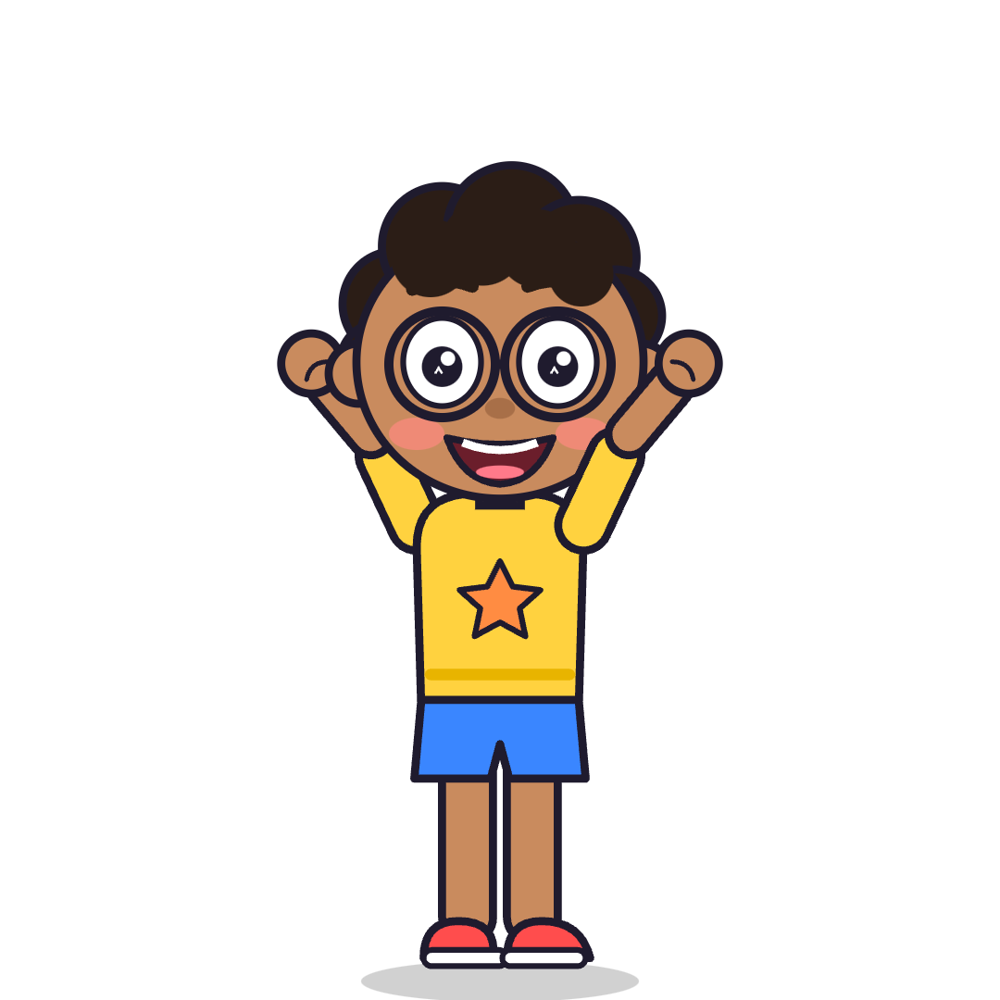
Quanto mais claro o pedido, menos idas e voltas. Um bom pedido tem: formato, tema, tom, duração e algo especial (piada, gancho, personagem).
Faz um vídeo no formato [explicativo] sobre [por que a pipoca estoura]. Tom [divertido, para jovens]. Duração [60 s]. Quero uma piada no final do tipo [comparação com algo do dia a dia]. Confere os fatos em duas fontes. Gera o rascunho com voz grátis e me manda.
Seja específico, como um diretor:
| Em vez de… | Diga… |
|---|---|
| "Não gostei." | "O problema não ficou engraçado; quero que a solução dê errado de um jeito mais exagerado." |
| "Tá estranho." | "No segundo 12 o texto está em cima do personagem. Sobe o texto." |
| "Muda a voz." | "A voz está séria demais. Testa uma voz mais jovem e animada, só com uma frase, antes de gerar tudo." |
| "Tá lento." | "Corta a cena 4 pela metade e faz um corte de câmera a cada 1,5 s." |
Quando uma correção valer para todos os vídeos do formato ("legenda nunca em cima do rosto", "nunca mais de 45 s"), termine com: "Anota essa regra na skill."
Estilos de vídeo prontos para produzir, com prompts para copiar.
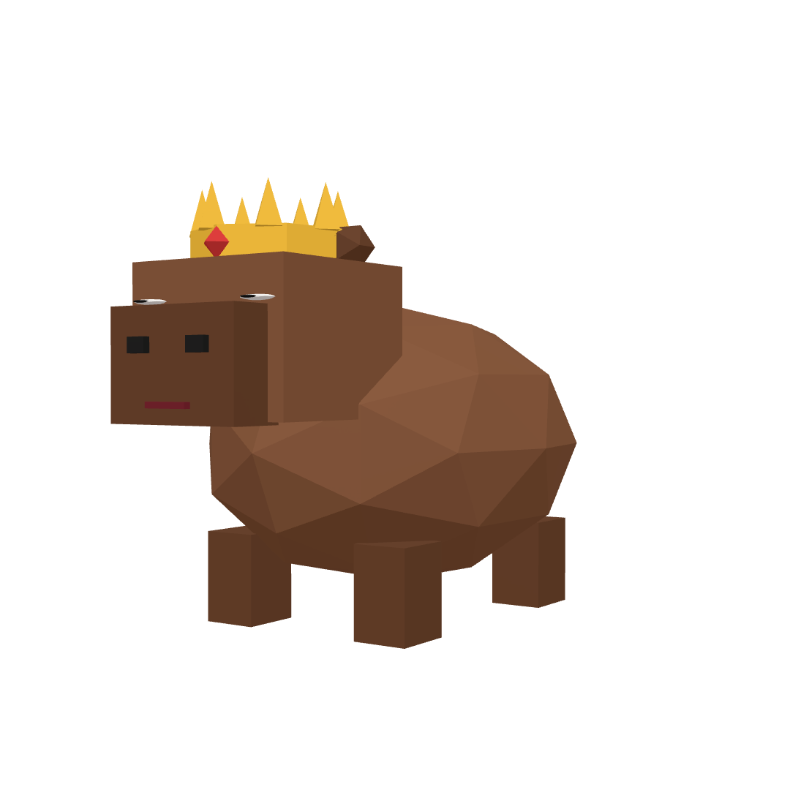
| # | Formato | Duração | Narração | Dificuldade |
|---|---|---|---|---|
| F1 | Explicativo 2D cartoon | 45–60 s | Sim | ★★☆ |
| F2 | Humor absurdo 3D em série | 60 s | Sim | ★★★ |
| F3 | Desafio do pause (neon) | 15–20 s, loop | Não | ★★☆ |
| F4 | Animação de palitinho | 20–60 s | Opcional | ★☆☆ |
| F5 | Quadro-negro (giz) | 45–90 s | Sim | ★★☆ |
| F6 | Quiz | 20–40 s | Opcional | ★☆☆ |
| F7 | Texto cinético | 15–45 s | Opcional | ★☆☆ |
| F8 | Fitness: treino, exercícios e dieta | 30–60 s | Sim | ★★☆ |
Comece por um formato ★☆☆ (palitinho, quiz ou texto cinético) para pegar o jeito do fluxo. Depois vá para o explicativo, e só então para o 3D.
Todo vídeo narrado nasce de um arquivo de roteiro. Esse é o "molde" que o Claude preenche:
{
"video": "pipoca",
"titulo": "Por que a pipoca estoura?",
"duracaoSegundos": 60,
"voz": { "motor": "kokoro", "voz": "pm_alex" },
"fontes": ["Fonte 1 ...", "Fonte 2 ..."],
"cenas": [
{ "id": "gancho",
"falas": [ { "texto": "Por que a pipoca estoura?",
"pronuncia": "[curious] Por que a pipoca ESTOURA?" } ] },
{ "id": "grao",
"falas": [ { "texto": "Cada grão guarda um pouquinho de água…",
"pronuncia": "Cada grão guarda um pouquinho de ÁGUA…" } ] }
]
}
Cada cena vira uma função de animação. Cada fala vira áudio com tempo de cada palavra. O campo id liga as duas coisas.
Uma pergunta que todo mundo já fez + uma resposta surpreendente + um personagem fixo que o público passa a reconhecer. É conteúdo "salvável" e compartilhável.
Quero criar o formato "Explicativo 2D" no estúdio. Crie um personagem cartoon original 2D em SVG (contorno escuro grosso, cores vivas), com expressões (neutro, feliz, animado, surpreso, pensativo, preocupado), poses (parado, apontando, explicando, comemorando, assustado) e boca sincronizada com o volume da narração. Crie também: cenários simples (céu com colinas, cozinha), componente de câmera (zoom/tremida), etiquetas de texto que entram com mola, título grande de impacto e a legenda palavra por palavra. Depois faça um vídeo de teste de 60 s sobre "por que o céu é azul" (fatos conferidos em 2 fontes) com voz grátis, gere os quadros-chave numa grade, confira o enquadramento e renderize.
Faz um vídeo explicativo sobre [tema]. 60 s, gancho em até 3 s, piada no final do tipo [ideia], chamada para comentar. Confere os fatos em duas fontes e lista no roteiro. Cria os objetos visuais que precisar. Rascunho com voz grátis.
O absurdo dito com cara séria é engraçado ("a geladeira pediu demissão"). E série com gancho faz a pessoa voltar para ver o próximo: é a mesma lógica das novelas.
Peça ao Claude para manter um arquivo serie.md com o elenco, as piadas recorrentes e a tabela de episódios (título + gancho deixado). Ele lê antes de escrever o próximo episódio, e a continuidade fica perfeita.
Quero um formato de humor absurdo em 3D low-poly com @remotion/three. Monte: peças facetadas (caixa, bola, cone, cilindro com flatShading), um componente de "rostinho" (olhos, sobrancelhas e boca com expressões) aplicável a qualquer objeto, um protagonista original low-poly, um cenário de cozinha, uma câmera com cortes secos e uma função que posiciona a câmera de frente para o rosto de um personagem. Textos: legenda de UMA palavra por vez, título de capítulo amarelo, onomatopeias e placas. Regras: corte a cada 1–2 s, nenhum plano parado por mais de 2,5 s, animação só com useCurrentFrame (nada de useFrame). Faça um episódio piloto de 60 s, confira os quadros (nada cortado na borda vertical) e renderize. Crie também o arquivo serie.md.
Faz o próximo episódio da série. Lê o serie.md, começa respondendo o gancho do último episódio, escala o absurdo em 6–7 capítulos e termina com um novo mistério + "CONTINUA…". Rascunho com voz grátis. Depois de aprovado, atualiza o serie.md.
É um joguinho dentro do vídeo: a pessoa assiste várias vezes tentando acertar (replay conta muito para o algoritmo) e comenta o resultado. E custa zero, porque não tem voz.
O vídeo nunca pausa sozinho: ele roda em loop contínuo e quem pausa é o espectador. Por isso o painel precisa estar sempre "ao vivo", mostrando o que aconteceria se a pessoa pausasse naquele exato quadro.
Ao pausar, o Instagram mostra um ícone de play no centro da tela, os botões ficam na direita e a legenda do post cobre o rodapé. Coloque o cronômetro no topo e o quadro secreto entre o centro e o rodapé, longe dos botões. Se a ação principal ficar no centro, garanta que o texto importante não fique embaixo do ícone de play. Veja o diagrama no Módulo 7.
Cria um formato "desafio do pause" sem narração, estética neon/arcade (fundo roxo, grade em perspectiva rolando, estrelas, brilho neon). Tema: [pause antes do foguete bater na Lua]. 5 tentativas em LOOP contínuo, cada uma mais rápida; o vídeo nunca pausa sozinho. Cronômetro grande no topo que chega a 0:00.00 quando o objeto toca a linha-alvo; painel ao vivo (CEDO DEMAIS / CEDO / PERTO / BATEU + diferença em ms + régua). No frame exato do 0:00.00, quadro secreto de 1 frame: "PERFEITO! COMENTA 'SALVEI'", posicionado fora do ícone de play e dos botões do Instagram. Música arcade original gerada por código e efeitos. Sem intro e sem tela final. Duração 13–20 s.
Faz um desafio novo com o tema [pause antes do balão estourar nos espinhos], mesmo formato e zonas seguras.
Ideias de temas: pare a bola antes de cair no buraco · pause quando o copo encher até a linha · salve o ovo antes da frigideira · pause o carro na beira do penhasco · pare o pêndulo no centro.
O traço simples é universal: qualquer pessoa se vê no bonequinho. E é o formato mais rápido de produzir, porque o personagem é só linhas: dá para fazer muitos vídeos por semana.
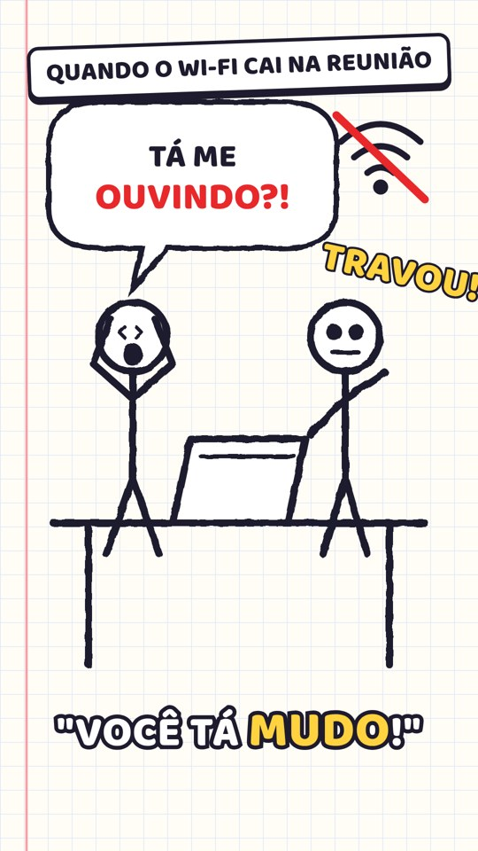
Protótipo do estúdio: traço tremido + balão de falaCria o formato "palitinho": um boneco de palito em SVG com cabeça redonda e membros articulados (ombro/cotovelo/quadril/joelho por ângulos), com poses prontas (parado, andando, correndo, pulando, caindo, sentado, comemorando, apontando, de mãos na cabeça) e transição suave entre poses. Traço preto grosso com efeito "tremido de desenho à mão" (o traço muda levemente a cada 3 quadros). Fundo papel quadriculado. Componentes: balão de fala, onomatopeia escrita à mão, objetos simples com o mesmo traço. Legenda palavra por palavra opcional. Faça um vídeo teste de 30 s: "Tipos de pessoa no elevador", 4 tipos, sem narração, com balões e música.
Faz um palitinho "[Quando você acorda segunda-feira]", 25 s, [sem narração / com narração grátis], reviravolta no final, e uma frase para a legenda do post.
Depois que as poses estão prontas, um vídeo de palitinho é basicamente uma lista de "pose X do segundo 3 ao 5". Monte um "roteiro de ações" em JSON e o Claude anima direto dele.
O olho acompanha o traço se formando, e isso prende a atenção e passa sensação de "aula de verdade". É ótimo para assuntos que precisam de esquema: fórmulas, linhas do tempo, mapas, fluxogramas.
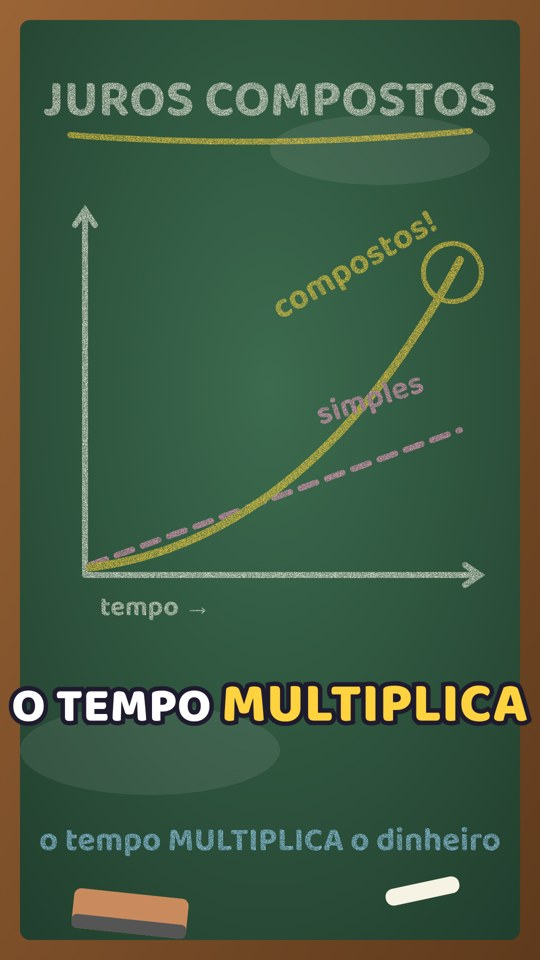
Protótipo do estúdio: traço de giz aparecendo + destaque coloridoCria o formato "quadro-negro": fundo de lousa verde-escura com moldura de madeira e manchas de apagador; textura de giz (filtro SVG de ruído) nas linhas; componente que DESENHA qualquer caminho SVG progressivamente (stroke-dashoffset) entre dois frames; texto que aparece letra por letra como escrita à mão; setas, círculos e sublinhados que se desenham; cores de giz branco, amarelo, rosa e azul; efeito de apagador para trocar de cena. Cada elemento começa a ser desenhado na palavra exata da narração (use o timeline). Voz calma de professor. Faça um teste de 60 s: "Juros simples x compostos", fatos conferidos.
Faz um quadro-negro sobre [como funciona a fotossíntese], 60 s, desenhando [a planta, o sol, setas de CO₂ e O₂]. Fatos em duas fontes. Rascunho com voz grátis.
Troque a lousa por um quadro branco com caneta preta e uma mão desenhada seguindo a ponta do traço. Fica no estilo "explainer de empresa", ótimo para conteúdo de negócios e marketing.
Todo mundo quer provar que sabe. O quiz gera comentários ("acertei!", "era a B, óbvio") e replays: a pessoa pausa para pensar. Também é um ótimo formato para qualquer nicho, de futebol a medicina.
Cria o formato "quiz" guiado por um JSON de perguntas (pergunta, alternativas, índice da correta, explicação curta). Visual: fundo colorido com formas suaves, cartão branco da pergunta, alternativas A/B/C entrando em sequência com mola, timer circular de 4 s com tique-taque, revelação (certa verde com ✔ e pulo, erradas cinza), placar "2/5", gancho e chamada final. Narração opcional (voz grátis lê a pergunta). Música animada original. Teste: 5 perguntas sobre o corpo humano, respostas conferidas em duas fontes.
Faz um quiz com 5 perguntas sobre [capitais do mundo], dificuldade crescente, a última bem difícil. Confere as respostas. Sem narração.
Uma resposta errada no quiz vira avalanche de comentários negativos. Sempre exija conferência das respostas e evite perguntas com "depende".
Não tem personagem, cenário nem 3D: é o formato mais rápido e barato de todos e, bem feito, é muito estiloso. Funciona com narração ou só com música: o texto é o vídeo.
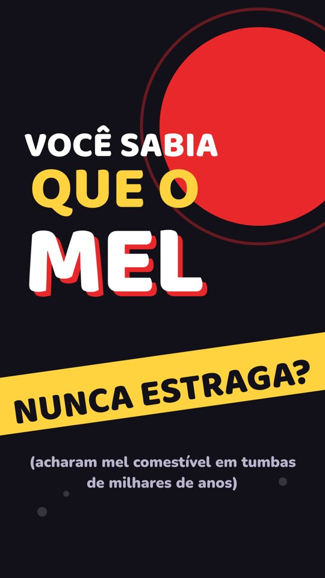
Protótipo do estúdio: hierarquia de tamanhos + palavra-chave em corCria o formato "texto cinético" guiado por um JSON de "telas" (texto, estilo de entrada, palavra destacada, cor). Estilos de entrada: bater (escala com mola), deslizar, girar, máquina de escrever, revelar por máscara. Música original gerada por código com BPM definido; cada tela entra exatamente em uma batida. Formas geométricas em movimento ao fundo, paleta de 3 cores. Se houver narração, as palavras aparecem no tempo da voz (timeline). Teste: 20 s, "3 fatos sobre o mel", sem narração.
Faz um texto cinético de 20 s com [3 curiosidades sobre o polvo], paleta [preto, laranja e branco], música a [120] BPM, sem narração. Fatos conferidos.
Fitness é um dos nichos mais buscados, e a animação tem uma vantagem enorme sobre o vídeo filmado: mostrar por dentro. Dá para destacar o músculo que está trabalhando, mostrar o ângulo certo da coluna e comparar "certo × errado" lado a lado, sem precisar de academia, câmera nem modelo.
| Série | Exemplo de vídeo |
|---|---|
| Execução correta | "Você agacha errado? 3 erros que travam seu resultado" |
| Músculo da semana | "Glúteo: os 3 exercícios que mais ativam" |
| Treino pronto | "Treino de 20 min em casa, sem equipamento" |
| Mito × verdade | "Abdominal queima a gordura da barriga? MITO" |
| Dieta prática | "Monte um prato equilibrado em 3 passos" |
| Ciência simples | "Por que o músculo dói 2 dias depois do treino?" |
Cria o formato "fitness" para vídeos de academia e nutrição. Personagem atlético 2D original (traço limpo, cores fortes) com esqueleto articulado (ombro, cotovelo, quadril, joelho, tornozelo, coluna) e animações em loop de exercícios: agachamento, flexão, prancha, afundo, remada, supino e levantamento terra. Camada de músculos que pode acender (peito, costas, ombro, bíceps, tríceps, abdômen, glúteo, quadríceps, posterior, panturrilha). Componentes: tela dividida CERTO ✔ x ERRADO ✘, linhas de ângulo, contador de repetições/séries/descanso, cartões de dieta (prato, porções, macros). Voz energética de treinador. Teste: 45 s "3 erros no agachamento", conteúdo conferido em fontes confiáveis.
Faz um vídeo fitness sobre [o erro mais comum na flexão de braço], 40 s, com comparação certo x errado e o músculo em destaque. Fontes confiáveis. Termina pedindo para salvar.
Conferir, ajustar e postar como profissional.
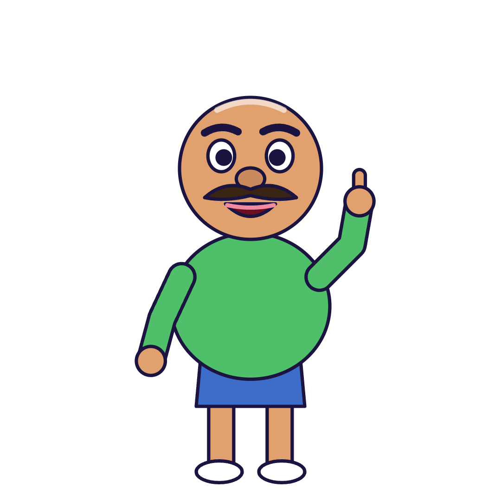
Peça ao Claude um "inspetor de qualidade" que roda depois de cada render e dá APROVADO ou REPROVADO, dizendo o que corrigir.
Cria scripts/qa.py (npm run qa) que confere o MP4 final e imprime OK/FALHA para cada item:
formato MP4 H.264 + AAC, 1080x1920, 30 fps, pixel yuv420p; duração dentro do alvo; volume integrado entre −16 e −13 LUFS e pico ≤ −1 dBTP; nenhum silêncio maior que 2,5 s; nenhuma imagem congelada maior que 1,5 s; nenhuma tela preta; gancho (primeira frase termina em até 3,2 s); toda fala tem legenda e as palavras da legenda caem sobre a fala real; voz nítida (energia de 1–6 kHz). No fim, gera uma folha de contato (grade com 12 quadros do vídeo) e imprime APROVADO ou REPROVADO. Adiciona ao CLAUDE.md: "sempre rodar o qa e olhar a folha de contato antes de entregar".
A folha de contato é uma imagem com vários quadros do vídeo lado a lado. Você e o Claude batem o olho e veem na hora se algum texto está cortado, se o personagem sumiu ou se uma cena ficou vazia.
O app cobre partes do seu vídeo com botões, nome do perfil, legenda do post e, quando a pessoa pausa, o ícone de play. Nada importante pode ficar nessas áreas.
Poste como rascunho ou "melhores amigos", pause no celular e tire um print. É o jeito mais garantido de ver o que fica coberto.
Peça ao Claude: "Escreve a legenda do post: gancho na primeira linha, 2–3 linhas de contexto, pergunta para gerar comentário e 5–8 hashtags do nicho."
Cada formato deste curso pode virar um canal próprio. Misturar estilos no mesmo perfil confunde o público e o algoritmo. Se quiser testar vários, crie um perfil por formato.
Os tropeços que todo mundo tem, e como pedir a solução.
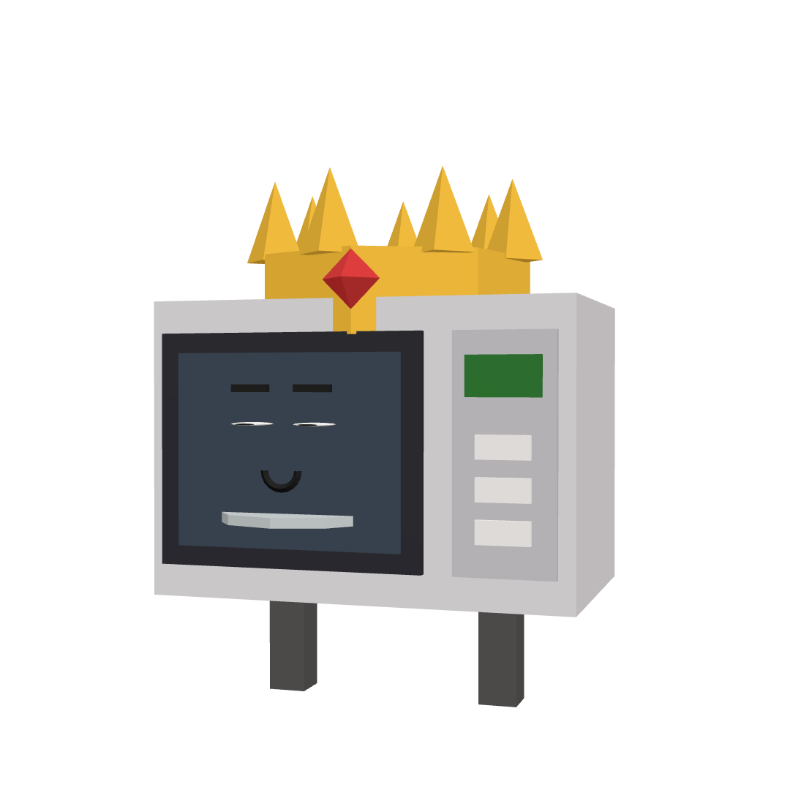
| Problema | O que fazer / o que pedir |
|---|---|
| "comando não encontrado" (node, python, ffmpeg) | Feche e reabra o terminal; reinicie o computador; no Windows, reinstale o Python marcando "Add to PATH". |
| Render muito lento ou travando | Renderize um vídeo por vez; feche outros programas; peça "renderiza com concurrency menor". No 3D, é normal levar vários minutos. |
| Texto ou personagem cortado na borda | "Gera a grade de quadros-chave e corrige tudo que estiver cortado na borda vertical." |
| Legenda fora de sincronia | "Confere as palavras que caem fora da fala e corrige os tempos." Às vezes uma risada ou suspiro desloca as marcações. |
| Áudio estourando (pico alto) | "Descobre em que segundo está o pico e abaixa os efeitos sonoros desse trecho." Não precisa regravar a voz. |
| Volume baixo | "Sobe a música e os efeitos até o vídeo ficar entre −16 e −13 LUFS." |
| Voz rápida/lenta demais em um trecho | "Acelera só a fala X em 10% localmente, sem gerar a voz de novo." |
| Gancho passou de 3 s | Antes da voz paga: encurte a frase. Depois: acelere só a primeira fala localmente. |
| Sobrou silêncio no fim | Escreva mais uma fala ou reduza a duração do vídeo para caber na narração. |
| A voz leu "[laughs]" em vez de rir | Troque por "hahaha" escrito na pronúncia ou remova a tag; em último caso, gere de novo só aquela frase. |
| Fato duvidoso no roteiro | "Confere esse dado em duas fontes confiáveis; se não confirmar, remove." Prefira "uma teoria diz…". |
| O Claude "esqueceu" uma regra | A regra precisa estar escrita no CLAUDE.md ou na skill do formato. Peça: "anota isso na skill". |
| Quebrou algo que funcionava | "Me mostra o que mudou desde o último commit" e "volta o arquivo X para a versão anterior". |
| Disco cheio | Apague vídeos antigos de out/ e caches de render que não precisa mais. |
Copie, cole e troque o que está entre colchetes.
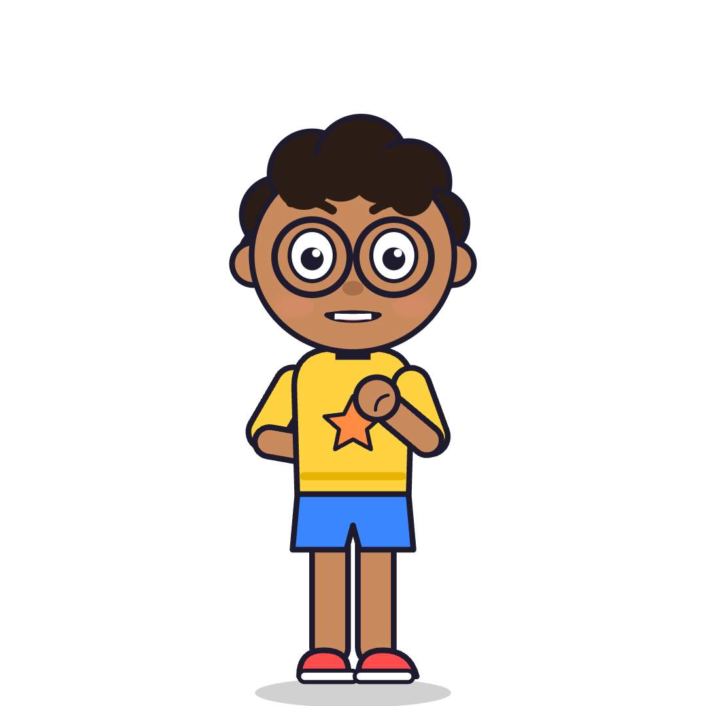
Me dá 15 ideias de vídeos [explicativos] para o nicho [culinária], com gancho de até 8 palavras para cada. Marca com ⭐ as 5 com mais potencial de compartilhamento e explica por quê.
Escreve o roteiro de [tema] no formato [F1]. 60 s (~130 palavras), frases curtas, gancho em até 3 s, uma piada no final, chamada para comentar. Separa "texto" (legenda) de "pronuncia" (com ênfases em MAIÚSCULAS). Lista as fontes. Ainda não gera áudio: quero aprovar o texto antes.
Aprovado. Gera o áudio com voz grátis, monta as cenas, confere os quadros-chave, renderiza, roda o qa e me manda o vídeo.
Autorizo a voz [nome da voz] ([X] caracteres). Gera, renderiza, roda o qa, salva como out/[nome].mp4 e faz o commit.
Antes de trocar a voz do canal, gera só uma frase de teste com as vozes [A], [B] e [C] e me manda os três áudios. Me diz o custo antes.
Escreve a legenda do post deste vídeo: gancho na primeira linha, contexto em 2 linhas, pergunta para comentários, 6 hashtags do nicho. Faz também uma versão curta para o TikTok.
Gera um quadro do vídeo para usar de capa: o momento mais expressivo, com o título [texto] grande no terço superior, PNG 1080x1920.
Planeja 10 episódios da série [nome], cada um com título, resumo de 2 linhas e o gancho que deixa para o próximo. Salva em serie.md.
Cria 3 opções de foto de perfil 1080x1080 no estilo do canal [descrição], legíveis em tamanho pequeno (círculo), e 3 sugestões de nome para o canal.
Do celular vazio ao canal com 20 vídeos publicados.
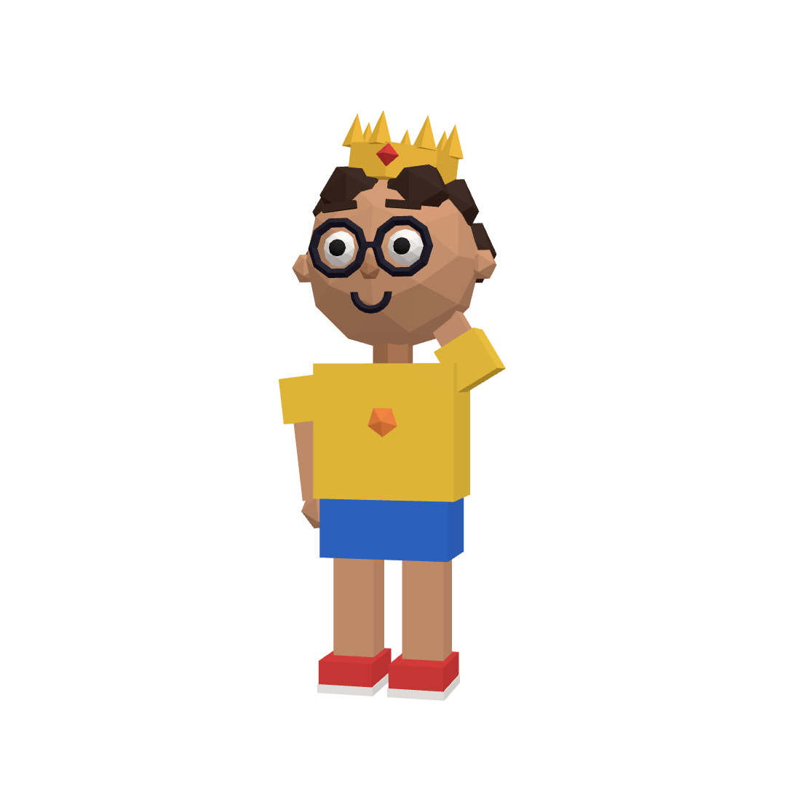
| Dias | Meta | Entregável |
|---|---|---|
| 1–2 | Instalar tudo (Módulo 2) e criar o estúdio (Módulo 3). | Vídeo de teste renderizado |
| 3 | Montar a voz grátis, a legenda e a conferência (Módulos 4 e 7). | Pipeline de áudio funcionando |
| 4–5 | Escolher um formato ★☆☆ e fazer o primeiro vídeo. | 1º vídeo + skill do formato |
| 6 | Nome do canal, foto de perfil, bio, 10 ideias de vídeo. | Perfil pronto |
| 7–13 | 1 vídeo por dia no formato escolhido. Postar todos. | 7 vídeos publicados |
| 14 | Analisar: quais tiveram mais retenção e salvamentos? | Lista do que repetir |
| 15–16 | Montar um segundo formato (★★☆) para testar. | Skill nova |
| 17–27 | 1 vídeo por dia: 70% no formato vencedor, 30% testes. | +11 vídeos |
| 28–29 | Criar uma série (com gancho) no formato vencedor. | Roteiro de 10 episódios |
| 30 | Revisar o CLAUDE.md e as skills com tudo o que aprendeu. | Estúdio "treinado" |
Quando pegar o ritmo, separe um dia para roteiros (5–7 de uma vez, aprovados juntos) e outro para renderizar. Enquanto um vídeo renderiza, você aprova o roteiro do próximo.
Variações que usam as mesmas peças do estúdio.
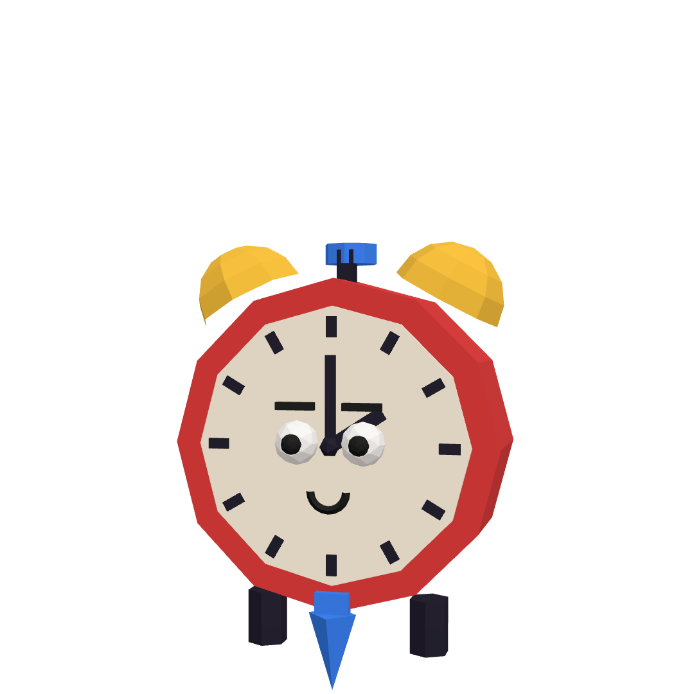
| Formato | Como montar |
|---|---|
| Ranking / Top 5 | Cartões numerados de 5 a 1 com contagem regressiva, música crescendo e "o nº 1 vai te surpreender". |
| Terror / mistério | 2D escuro, vinheta, ruído, voz grave sussurrada, cortes lentos e um susto sonoro no fim. Use lendas e histórias originais. |
| Papel recortado | Personagens e cenários como recortes de papel (sombra suave, textura de papel, bordas irregulares), movimentos em "stop-motion" (12 fps). |
| Ilusão de ótica / teste de visão | Sem narração: "Quantos círculos você vê?", timer e revelação. Custo zero, muitos comentários. |
| Lyric video | Texto cinético sincronizado com a letra de uma música original sua. |
| "Você vs. Você" | Tela dividida comparando duas escolhas (ex.: "Você que dorme 8 h vs. você que dorme 4 h"), com palitinho ou cartoon. |
| Linha do tempo | Câmera passeando por uma linha do tempo horizontal, com datas e ícones: história, evolução de objetos. |
| Receita animada | Ingredientes caindo na panela, passos numerados, timer. Funciona muito bem com voz alegre. |
| Mapa animado | Países acendendo, rotas desenhadas e números crescendo, para geografia e curiosidades de viagem. |
| Comercial fake | Paródia de televendas de produtos absurdos, com filtro de TV antiga (VHS) e letrinhas miúdas no final. |
| Termo | Significado |
|---|---|
| 9:16 | Formato vertical de celular (1080 de largura por 1920 de altura). |
| fps | Quadros por segundo. Usamos 30. |
| Frame / quadro | Uma "foto" do vídeo. 1 segundo = 30 quadros. |
| Composição | No Remotion, um "tipo de vídeo" registrado (ex.: Quiz, Explicativo). |
| Render / renderizar | Transformar o código das cenas em arquivo de vídeo. |
| Timeline | Arquivo com o início e o fim de cada cena, fala e palavra. |
| Skill | Manual de um formato que o Claude segue automaticamente. |
| CLAUDE.md | Manual geral do estúdio, lido em toda conversa. |
| Commit | "Ponto de salvamento" do projeto no Git. |
| Prompt | O pedido que você escreve para a IA. |
| TTS | Text-to-speech: transformar texto em voz. |
| LUFS / dBTP | Medidas de volume médio e de pico do áudio. |
| SFX | Efeitos sonoros (whoosh, pop, boing…). |
| Low-poly | 3D com poucas faces, visual facetado e "fofo". |
| Gancho | A frase/imagem dos primeiros 3 segundos que segura o espectador. |
| Folha de contato | Imagem com vários quadros do vídeo lado a lado, para conferência. |
| Zonas seguras | Áreas da tela que não são cobertas pelos botões e textos do app. |
Monte o estúdio, escolha um formato e publique o primeiro vídeo ainda esta semana. O primeiro vai dar trabalho; o décimo vai sair quase sozinho. Bons vídeos! 🎬
remotion.dev/license.